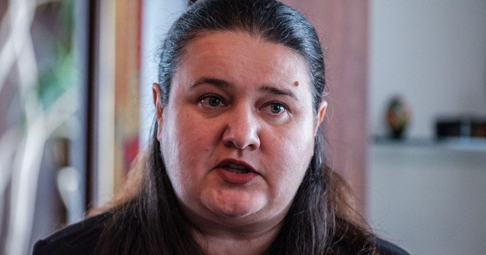

Ukraine Sees A Future As An Essential U.S. PartnerWASHINGTON ― Ukraine is already preparing for the day after it triumphs against Russian invaders, and it believes that its future holds tremendous benefits for the U.S. and its other friends, according to the Ukrainian ambassador to the U.S., Oksana Markarova. “We will not be a burden but rather a solution to so many problems,” Markarova told HuffPost in a recent interview. Markarova is making a multi-pronged pitch about the value of aid for Ukraine as she and her government address growing concerns from U.S. lawmakers and politicians (mostly Republicans) about the American assistance being sent to Kyiv. Ukraine aid will likely be a major topic of dispute during negotiations in Congress this fall over the annual defense policy bill and a budget request from President Joe Biden that includes an additional $20 billion to bolster Ukrainian resistance. The U.S. has approved around $70 billion in defense and humanitarian assistance for Ukraine so far. European states and other nations, including Canada and Japan, have also pledged tens of billions of dollars in military aid and relief. Kyiv’s justification for the help largely rests on long-term planning for international security. Russia’s February 2022 full-scale invasion created what most Western officials describe as the biggest crisis in Europe since World War II, prompting nations such as Germany to beef up their defenses and driving two historically neutral states, Sweden and Finland, to seek membership in the NATO alliance. Whatever the eventual outcome of the Russian aggression, experts expect a lasting international fear of Moscow and a desire for a new level of collective defense. Ukraine could be crucial to developing a new peace and deterring future fighting on the continent, Markarova argued. In this projection, Kyiv will use international help to enhance its military and rebuild its infrastructure ― from railroads to its energy grid ― so it has an “enduring strength” for its allies to rely on, the ambassador said. “In the future, we also can protect not only the U.S. but Europe, essentially, and the region.” That vision involves both continued aid and a willingness from the U.S. and its friends to include Ukraine in two coveted groups: NATO and the European Union. The EU granted Ukraine candidate status last summer, and Ukrainian officials are working on reforms to meet the union’s standards on democratic principles, trade and EU-wide legislation. NATO has also repeatedly affirmed that Ukraine is a possible member, but that path is more complicated because many NATO members remain anxious about agreeing to go to war if Kyiv is attacked again. Both groups require all of their current member countries to agree before any new member can join. Markarova projected confidence in both candidacies. “We will win, and we will be a member of the European Union and we will be a member of NATO,” the ambassador said, adding that her country is determined to be “self-sustaining.” “We will add to the transatlantic family,” Markarova said. “Every dollar that you’re giving us from your taxpayers not only is used wisely now ― it’s an investment in the future.” Ukrainian President Volodymr Zelenskyy has proposed an ambitious $750 billion recovery plan to integrate Ukraine into the European Union, decarbonize its economy and set it up for 7% annual growth by 2032. The plan hinges on funding from other countries and international institutions as well as reparations from Russia or the seizure of Russia’s assets abroad. By receiving aid and sketching out its recovery today, Ukraine can offer economic boons for years, according to Markarova. “We could be a solution to so many challenges that the U.S. has, with all the rare earth minerals and digital professionals and agriculture,” she said. Ukraine possesses large quantities of those minerals, which are key to climate-friendly technology and which governments worldwide are trying to ensure they can access. Meanwhile, Ukraine has already developed significant tech and grain industries that could grow with additional investment. And international assistance is keeping Kyiv from developing abiding problems that could force it to seek an eventual bailout, Markarova suggested. Aid is helping Ukraine maintain services for its citizens without resorting to inflationary monetary policies, she said. She noted that her country’s annual inflation rate had fallen from about 25% to about 15%. “I know in the United States, you’re saying that’s huge inflation. But for a country in war, we’re pretty happy with where we are right now,” Markarova said. “As the former minister of finance, I can tell you the last thing you want is also to undermine your macroeconomic stability at this time, to have a galloping inflation or exchange rate.” “Providing us more now actually will allow [the U.S.] not to provide us a lot in the future,” she said. |
 |